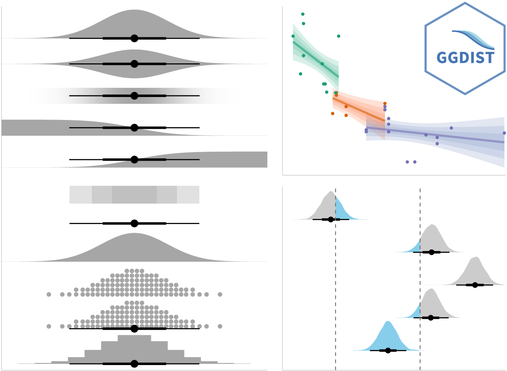

code block
devtools::install_github("wilkelab/ungeviz")Lesson 4c: Visualising Uncertainty
| Work done | Hands-on Exercise 4c |
| Hours taken | ⏱️⏱️ ( hospitalisation leave) | |
| Questions | 0 |
| How do I feel? | ü§î |
| What do I think? | Hands-on Exercise 4c was really so interesting! I did not have any prior notion of visualising uncertainty and this was one limitation of Take-home Exercise 01 and 02. How can we move away from simplified summaries or integrate both? |
Visualising uncertainty is relatively new in statistical graphics. In this chapter, you will gain hands-on experience on creating statistical graphics for visualising uncertainty. By the end of this chapter you will be able:
to plot statistics error bars by using ggplot2,
to plot interactive error bars by combining ggplot2, plotly and DT,
to create advanced by using ggdist, and
to create hypothetical outcome plots (HOPs) by using ungeviz package.
According to Visualizing uncertainty,
Another definition by Nathan Yau in Visualizing the Uncertainty in Data states that:
The code chunk below uses p_load() of pacman package to check if the following R packages are installed in the computer. If they are, then they will be launched into R.
tidyverse, a family of R packages for data science process,
plotly for creating interactive plot,
gganimate for creating animation plot,
DT for displaying interactive html table,
crosstalk for for implementing cross-widget interactions (currently, linked brushing and filtering), and
ggdist for visualising distribution and uncertainty.
devtools::install_github("wilkelab/ungeviz")pacman::p_load(ungeviz, plotly, crosstalk,
DT, ggdist, ggridges,
colorspace, gganimate, tidyverse)This section is taken from Hands-on_Ex02 as we are using the same data set.
The data set, Exam_data.csv, contains the Year-end examination grades of a cohort of primary 3 students from a local school, and is uploaded as exam_data.
In the code chunk below, read_csv() of readr package is used to import Exam_data.csv data file into R and save it as an tibble data frame called exam_data.
exam <- read_csv("data/Exam_data.csv")A point estimate is a single number, such as a mean. Uncertainty, on the other hand, is expressed as standard error, confidence interval, or credible interval.
Don’t confuse the uncertainty of a point estimate with the variation in the sample.
According to Visualizing uncertainty,
In this section, you will learn how to plot error bars of maths scores by race by using data provided in exam tibble data frame.
Firstly, the code chunk below will be used to derive the necessary summary statistics.
my_sum <- exam %>%
group_by(RACE) %>%
summarise(
n=n(),
mean=mean(MATHS),
sd=sd(MATHS)
) %>%
mutate(se=sd/sqrt(n-1))group_by() of dplyr package is used to group the observation by RACE,
summarise() is used to compute the count of observations, mean, standard deviation
mutate() is used to derive standard error of Maths by RACE, and
the output is save as a tibble data table called my_sum.
Things to learn from the code chunk above:
group_by() of dplyr package is used to group the observation by RACE,
summarise() is used to compute the count of observations, mean, standard deviation
mutate() is used to derive standard error of Maths by RACE, and
the output is save as a tibble data table called my_sum.
Next, the code chunk below will be used to display my_sum tibble data frame in an html table format.
knitr::kable(head(my_sum), format = 'html')| RACE | n | mean | sd | se |
|---|---|---|---|---|
| Chinese | 193 | 76.50777 | 15.69040 | 1.132357 |
| Indian | 12 | 60.66667 | 23.35237 | 7.041005 |
| Malay | 108 | 57.44444 | 21.13478 | 2.043177 |
| Others | 9 | 69.66667 | 10.72381 | 3.791438 |
Now we are ready to plot the standard error bars of mean maths score by race as shown below.
ggplot(my_sum) +
geom_errorbar(
aes(x=RACE,
ymin=mean-se,
ymax=mean+se),
width=0.2,
colour="black",
alpha=0.9,
size=0.5) +
geom_point(aes
(x=RACE,
y=mean),
stat="identity",
color="red",
size = 1.5,
alpha=1) +
ggtitle("Standard error of mean Maths score by Race") Things to learn from the code chunk above:
The error bars are computed by using the formula mean+/-se.
For geom_point(), it is important to indicate stat=“identity”.
Instead of plotting the standard error bar of point estimates, we can also plot the confidence intervals of mean maths score by race.
ggplot(my_sum) +
geom_errorbar(
aes(x=reorder(RACE, -mean),
ymin=mean-1.96*se,
ymax=mean+1.96*se),
width=0.2,
colour="black",
alpha=0.9,
size=0.5) +
geom_point(aes
(x=RACE,
y=mean),
stat="identity",
color="red",
size = 1.5,
alpha=1) +
labs(x = "Maths score",
title = "95% confidence interval of mean Maths score by Race") Things to learn from the code chunk above:
The confidence intervals are computed by using the formula mean+/-1.96*se.
The error bars is sorted by using the average maths scores.
labs() argument of ggplot2 is used to change the x-axis label.
In this section, you will learn how to plot interactive error bars for the 99% confidence interval of mean maths score by race as shown in the figure below.
shared_df = SharedData$new(my_sum)
bscols(widths = c(5,7),
ggplotly((ggplot(shared_df) +
geom_errorbar(aes(
x=reorder(RACE, -mean),
ymin=mean-2.58*se,
ymax=mean+2.58*se),
width=0.2,
colour="black",
alpha=0.9,
size=0.5) +
geom_point(aes(
x=RACE,
y=mean,
text = paste("Race:", `RACE`,
"<br>N:", `n`,
"<br>Avg. Scores:", round(mean, digits = 2),
"<br>95% CI:[",
round((mean-2.58*se), digits = 2), ",",
round((mean+2.58*se), digits = 2),"]")),
stat="identity",
color="red",
size = 1.5,
alpha=1) +
xlab("Race") +
ylab("Average Scores") +
theme_minimal() +
theme(axis.text.x = element_text(
angle = 45, vjust = 0.5, hjust=1)) +
ggtitle("99% Confidence interval of average /<br>Maths scores by Race")),
tooltip = "text"),
DT::datatable(shared_df,
rownames = FALSE,
class="compact",
width="100%",
options = list(pageLength = 10,
scrollX=T),
colnames = c("No. of pupils",
"Avg Scores",
"Std Dev",
"Std Error")) %>%
formatRound(columns=c('mean', 'sd', 'se'),
digits=2)) ggdist is an R package that provides a flexible set of ggplot2 geoms and stats designed especially for visualising distributions and uncertainty.
It is designed for both frequentist and Bayesian uncertainty visualization, taking the view that uncertainty visualization can be unified through the perspective of distribution visualization:
for frequentist models, one visualises confidence distributions or bootstrap distributions (see vignette(“freq-uncertainty-vis”));
for Bayesian models, one visualises probability distributions (see the tidybayes package, which builds on top of ggdist).

In the code chunk below, stat_pointinterval() of ggdist is used to build a visual for displaying distribution of maths scores by race.
exam %>%
ggplot(aes(x = RACE,
y = MATHS)) +
stat_pointinterval() +
labs(
title = "Visualising confidence intervals of mean Math score",
subtitle = "Mean Point + Multiple-interval plot")For example, in the code chunk below the following arguments are used:
.width = 0.95
.point = median
.interval = qi
exam %>%
ggplot(aes(x = RACE, y = MATHS)) +
stat_pointinterval(.width = 0.95,
.point = median,
.interval = qi) +
labs(
title = "Visualising confidence intervals of median Math score",
subtitle = "Median Point + Multiple-interval plot")In my own makeover to show 95% and 99% confidence levels, in the code chunk below the following arguments are used:
exam %>%
ggplot(aes(x = RACE,
y = MATHS)) +
stat_pointinterval(
.width = c(0.95, 0.99),
show.legend = FALSE) +
labs(
title = "Visualising confidence intervals of mean Math score",
subtitle = "Mean Point + Multiple-interval plot")
exam %>%
ggplot(aes(x = RACE,
y = MATHS)) +
stat_pointinterval(
show.legend = FALSE) +
labs(
title = "Visualising confidence intervals of mean Math score",
subtitle = "Mean Point + Multiple-interval plot")In the code chunk below, stat_gradientinterval() of ggdist is used to build a visual for displaying distribution of maths scores by rac

exam %>%
ggplot(aes(x = RACE,
y = MATHS)) +
stat_gradientinterval(
fill = "skyblue",
show.legend = TRUE
) +
labs(
title = "Visualising confidence intervals of mean math score",
subtitle = "Gradient + interval plot")According to Visualizing uncertainty,
library(ungeviz)ggplot(data = exam,
(aes(x = factor(RACE), y = MATHS))) +
geom_point(position = position_jitter(
height = 0.3, width = 0.05),
size = 0.4, color = "#0072B2", alpha = 1/2) +
geom_hpline(data = sampler(25, group = RACE), height = 0.6, color = "#D55E00") +
theme_bw() +
# `.draw` is a generated column indicating the sample draw
transition_states(.draw, 1, 3)